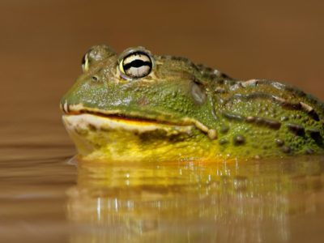

ANIMALS
Aardvark
Aardvark Facts

Number Of Species :
18
Weight :
60kg - 80kg (130lbs - 180lbs)
Group :
Mammal
Colour :
Brown
Grey
Yellow
Length :
1.05m - 2.20m (3.4ft - 7.3ft)
Top Speed :
25 mph
Lifespan :
23 years
Other Name(s) are Antbear, Earth Pig.The habitat that it lives in is Sandy and clay soil.
Its diet is omnivorous.It's food is ants and termites.It lives in Sub-Saharan africa.
Its skin type is Hair.Its most distinctive feature is that is has a long sticky tongue
and rabbit like ears and its young is called a Cub.
Abyssinian
Abyssinian Facts

Weight : 16-20 lbs
Lifespan :
13-15 years
Colour :
Brown,
Grey,
Black,
White,
Beige
It's the oldest breed of the cat in the World !!! Its Distinctive features are Silky Fur and almond shaped eyes.
Its other name(s) are aka aby or Abys for short.Its diet is omnivorous and its skin type is hair.
Adelie Penguin
Adelie Penguin Facts
Wingspan :
35cm - 70cm (14in - 27.5in)
Lifespan :
10 - 20 years
Weight :
3kg - 6kg (7lbs - 13lbs)
Top Speed :
45 mph
Height :
40cm - 75cm (16in - 30in)
It eats UP TO 2KG OF FOOD PER DAY !!!! It eats Krill, Fishes and Squids. Its baby is called a chick. Its group Behavior is Colony.
It's estimad Population is 5 MILLLION !!! Its most distinctive feature is its small white circles around each eye. Its Predators
are Leopard Seals, Skua Gulls and Killer Whales. Its diet is carnivorous. It lives in Coastal Antarctica. Its Group is Birds and
Its skin type are Feathers.
Affenpinscher
Affenpinscher Facts


Type :
Terrier
Colour :
Grey,
Black
Temperament :
Alert and inquisitive
Training :
Medium
The German name of Affenpinscher translates to monkey dog. This pup's face is similar to a monkey's!.
It's Distinctive features are Dark wiry-haired body and dark eyes. Its diet is Omnivorous. Its Group is dogs
and Its Skin type is hair.
Afghan Hound
Afghan Hound Facts
Type :
Hound
Colour :
Brown,
Black,
White,
Gold
Temperament :
Alert yet reserved and lively
Training :
Moderately Easy
These dogs were originally bred for hunting purposes. They are one of the oldest dog breeds in the world,
though they are now found in several rescue shelters around the world. They are known to be as fast as racehorses.
The fur that covers these hounds keeps them very warm,though they can be shaved as well. Afghan Hounds have scent glands
that usually produce a musky but not malodorous scent.Its Distinctive features are that it has long fur and a Pointed muzzle.
Thier diet is Omnivorous. Its Group is dogs and Its Skin type is hair.
African Bullfrog
American Bullfrog Facts

Water Type :
Fresh
Other Name(s) :
Pixie frog, Giant African Bullfrog
Colour :
Yellow,
Cream,
Olive,
Light-Brown
Lifespan :
45 years
Weight :
0.9 to 18 kilograms (2 - 4 pounds)
Length :
11.43 - 25.4 centimeters (4.5 - 10 inches)
Type :
Amphibian
The African bullfrog is one of only three species of frog that have “teeth”.Its main food is Reptiles,
small mammals, small birds, insects, amphibians, including other frogs. It's young is called Tadpole, polliwog, larva.
Its most distonctive feature is Its Size.Its Habitat in Deserts, high veld, floodplains, grassland, savanna, farms, marshes,
ponds, lakes.Its Predators are Humans :( .Its diet is carnivorous,It lives in Sub-Saharan Africa and its Skin Type is Permeable.